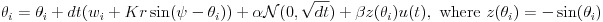

K = Noise Strength = DBS Strength = # of oscillators =
Mean of oscillator frequency (in radians) = Standard Deviation of oscillator frequency (in radians) =
Sampling Frequency (in Hz) = Pulse Frequency (in Hz) =
For auto-stimulate only: # of Pulses (for autostimulate) = Phase to stimulate at (in radians) =
Stimulation options: Uniform Half Random Half & Random
auto-stimulate
Time left: N/A
Update Rule:
